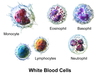

white-blood-cell

Definition: White blood cells, also called leukocytes or leucocytes, are cells of the immune system that are involved in protecting the body against both infectious disease and foreign invaders. White blood cells include three main subtypes; granulocytes, lymphocytes and monocytes.All white blood cells are produced and derived from multipotent cells in the bone marrow known as hematopoietic stem cells. Leukocytes are found throughout the body, including the blood and lymphatic system. All white blood cells have nuclei, which distinguishes them from the other blood cells, the anucleated red blood cells (RBCs) and platelets. The different white blood cells are usually classified by cell lineage (myeloid cells or lymphoid cells). White blood cells are part of the body's immune system. They help the body fight infection and other diseases. Types of white blood cells are granulocytes (neutrophils, eosinophils, and basophils), and agranulocytes (monocytes, and lymphocytes (T cells and B cells)). Myeloid cells (myelocytes) include neutrophils, eosinophils, mast cells, basophils, and monocytes. Monocytes are further subdivided into dendritic cells and macrophages. Monocytes and neutrophils are phagocytic. Lymphoid cells (lymphocytes) include T cells (subdivided into helper T cells, memory T cells, cytotoxic T cells), B cells (subdivided into plasma cells and memory B cells), and natural killer cells. Historically, white blood cells were classified by their physical characteristics (granulocytes and agranulocytes), but this classification system is less frequently used now. Produced in the bone marrow, white blood cells defend the body against infections and disease. An excess of white blood cells is usually due to infection or inflammation. Less commonly, a high white blood cell count could indicate certain blood cancers or bone marrow disorders.
Source: Wikipedia
Wikipedia Page (Something wrong with this association? Let us know.)
Wikidata Page (Something wrong with this association? Let us know.)
Occurs in: